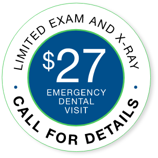

Arizona’s
Top-Rated
Emergency Dentists

We understand. Dental emergencies are tough to predict, and it is even more difficult to figure out what is causing the pain. Because we handle more emergencies in a month than many dentists see in a year, we can find solutions quickly. We start with a same-day appointment, and your visit will include a thorough exam and the necessary x-rays. Most importantly, we will treat you with respect and get you back on a path to a healthy, beautiful smile. Call now to schedule your same-day appointment.

My wife recently had a dental emergency with an abcess tooth. AZ Family Dental fit her in on short notice and made her experience a great one. Myself just had a crown done. I have a fear of the dentist so I don’t like going! However they make me feel relaxed Andy experience as comfortable as possible. I wouldn’t think of going to anyone else.
My experience with AZ Family Dental was the best experience I’ve ever had when it comes to dental care. Came in through emergency, cracked the crowns on my front teeth. From office staff, dental hygienist & physicians, they worked as a team, state-of-the-art equipment, never have experienced such a professional, caring approach in a dental environment. The cost was also reasonable.
I experienced my first ever dental emergency over the last week and a half […] Out of all of the doctors and specialists I saw, AZ Family Dental took my pain seriously. They knew there was something wrong and knew they needed to help me. Now FINALLY after almost two weeks of being at a level 10 for pain, I am pain free (except for soreness of course).

My wife recently had a dental emergency with an abcess tooth. AZ Family Dental fit her in on short notice and made her experience a great one. Myself just had a crown done. I have a fear of the dentist so I don’t like going! However they make me feel relaxed Andy experience as comfortable as possible. I wouldn’t think of going to anyone else.
My experience with AZ Family Dental was the best experience I’ve ever had when it comes to dental care. Came in through emergency, cracked the crowns on my front teeth. From office staff, dental hygienist & physicians, they worked as a team, state-of-the-art equipment, never have experienced such a professional, caring approach in a dental environment. The cost was also reasonable.
I experienced my first ever dental emergency over the last week and a half […] Out of all of the doctors and specialists I saw, AZ Family Dental took my pain seriously. They knew there was something wrong and knew they needed to help me. Now FINALLY after almost two weeks of being at a level 10 for pain, I am pain free (except for soreness of course).
When you or a loved one is in dental pain, having to wait for care is the absolute worst. That’s what happens to most emergency dental patients in standard ERs, but at AZ Family Dental we know time is of the essence. That’s why we offer same-day appointments for all emergency patients. Just give our Emergency Hotline a call, and we’ll schedule you so we can help you as fast.
Call our emergency hotlineWe realize the importance of taking care of your teeth, and we welcome dental insurance as a partner in making exceptional dentistry affordable. If you are fortunate enough to have PPO dental insurance, call us. We work closely with all the leading plans, and our team will help you understand and maximize your benefits.